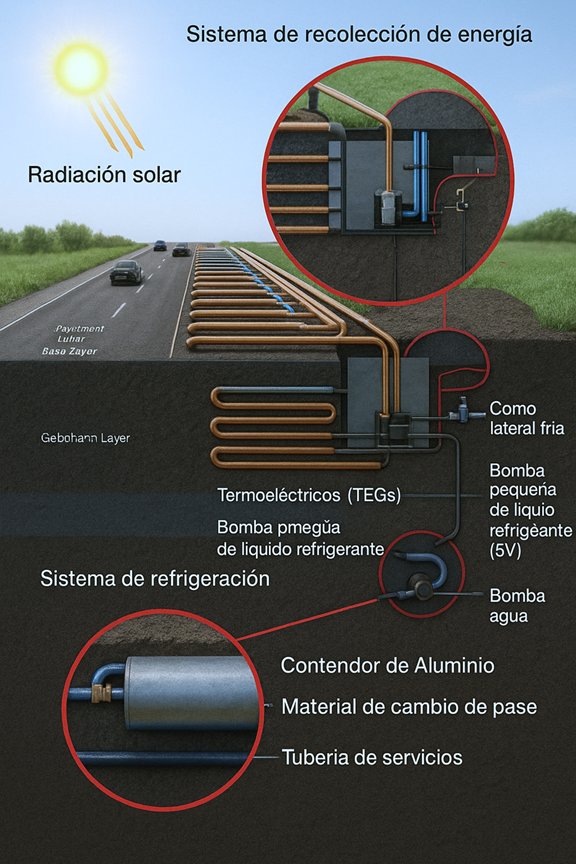

Geotermic Bot
Asistente inteligente para el diseño de mezclas de suelo-cemento
Geotermic Bot es un asistente conversacional basado en inteligencia artificial, diseñado para ayudar a ingenieros civiles en el diseño de mezclas para suelos mejorados con cemento. Utiliza un modelo de deep learning entrenado con datos reales para predecir el contenido óptimo de cemento según las características del suelo y las condiciones del proyecto.
- Predicción rápida y precisa del contenido de cemento.
- Fácil de usar desde tu móvil o PC vía Telegram.
- Ideal para proyectos de pavimentación y estabilización de suelos.